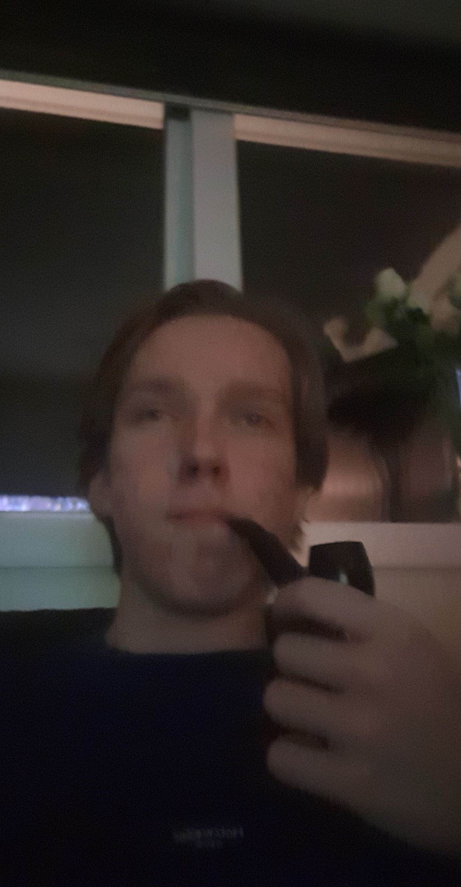
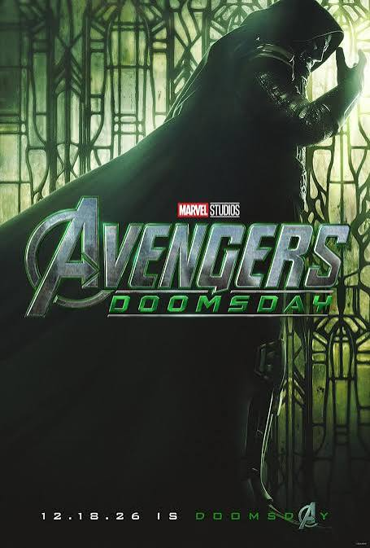
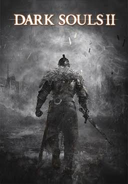
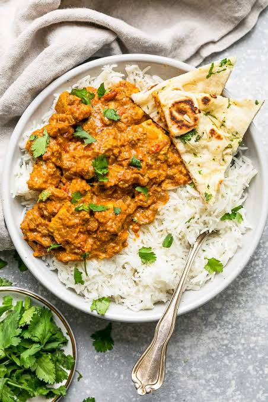
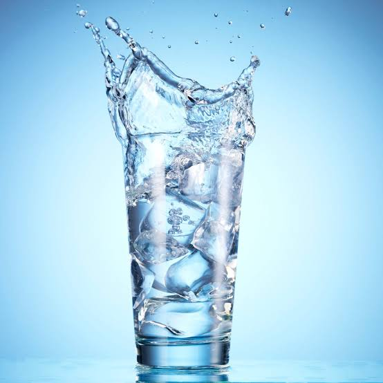
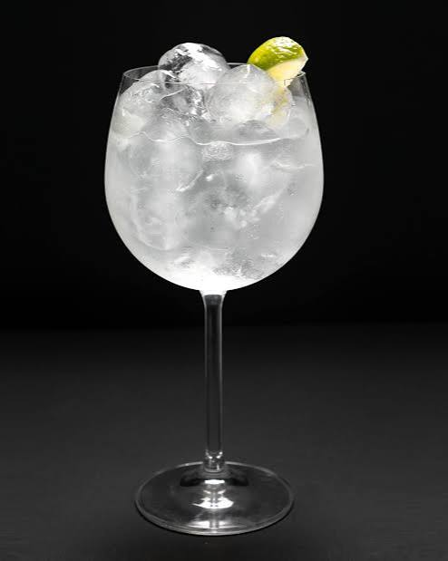
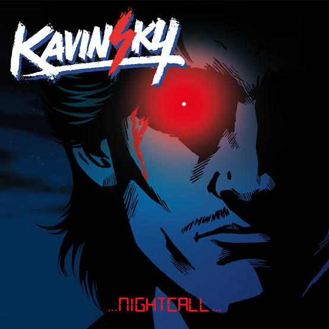

Velkommen til min hjemmeside!
| Styrke | 3 |
| Stamina | 1 |
| Hastighet | 5 |
| Intelligens | 999999999999999999 |
| Karisma | -4 |
Mentalitet:
Umotivert og paranoid


Filmen har ikkje engang komt ut enda, men eg er so hypa at eg veit den kjem til å bli min favoritt film

Ditta spele lowkey sug men det er også litt gøy

Chicken tikki masala he alltid vert min favoritt mattrett sida eg smakte den får første gang, den består av kyllingbita servert med en krydra saus som inneheld tomat og fløte, servert med ris og ikkje minst nan brød

Beste tørstedrikka er alltid vatn, men berre vist det er med isbita

Kan aldri gå galt med en gin tonic, ingrediensane er lowkey crazy, først so er det gin, åsso er det tonic

Eg hørte på dinna sangen når eg kjørte aleine får første gang, og det var en fantastisk opplevelse (Rip Kavinsky)